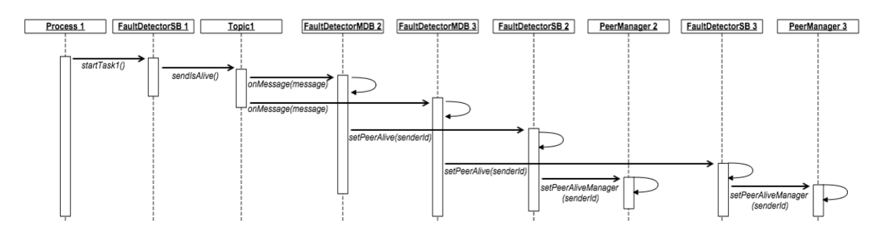
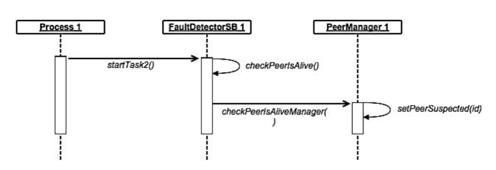

Fault detection
Fault Detection Abbiamo già detto come all’interno della classe Starter, per ciascun processo vengono avviati i thread relativi all’esecuzione dei due algoritmi, nello specifico nell’algoritmo del Fault Detection (FD), vengono creati altri due thread che per la gestione in parallelo dei due task che caraterizzano l’FD. Il primo task, richiamato tramite la funzione startTask1() è quello che implementa l’invio del messaggio di heartBeat “is-alive” temporizzato.

Come si nota dal sequence diagram relativo solo al thread che esegue startTask1(), ogni volta che un processo invia un TextMessage con contenuto “is-alive”, gli MDB dei processi 2 e 3 in ascolto sul Topic1, rilevano la presenza di un messaggio e notificano ciascuno al proprio session bean la presenza del processo 1 nella rete di comunicazione. Non appena i session bean ricevono questa notifica vanno ad aggiornare la propria struttura dati presente nella classe statica singleton PeerManager, segnalando data e ora di quando quel processo ha mandato il messaggio, in modo da poter notificare l’ultima volta che è stato segnalato come “vivo”. Il secondo thread mandato in parallelo durante l’algoritmo FD esegue il metodo startTask2() che al suo interno si occupa della gestione dei fault e dei delay, richiamando in maniera temporizzata il metodo checkPeerIsAlive().
